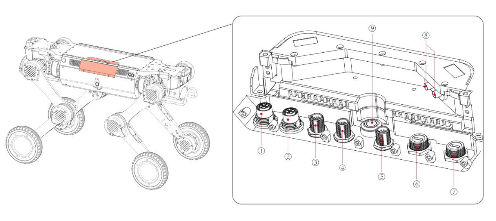
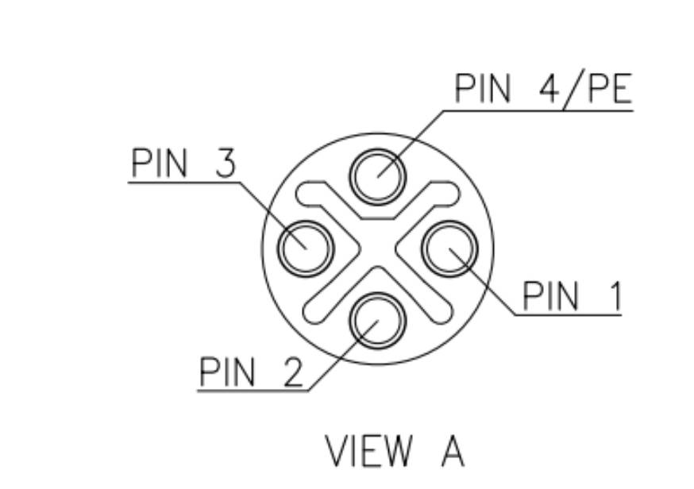
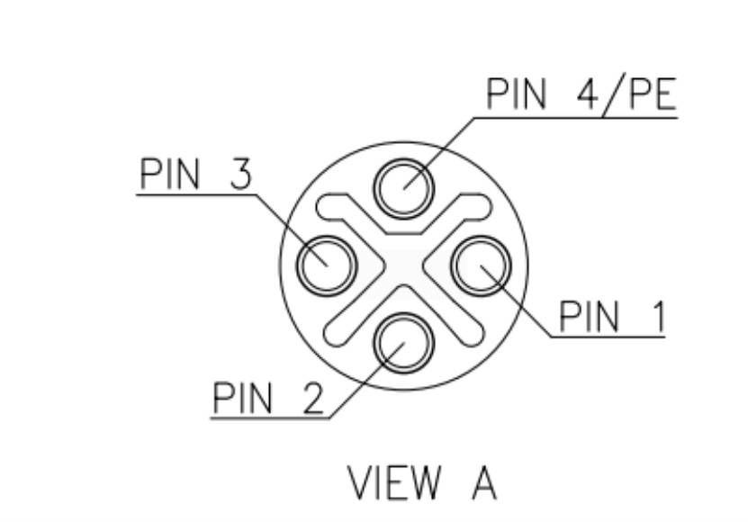
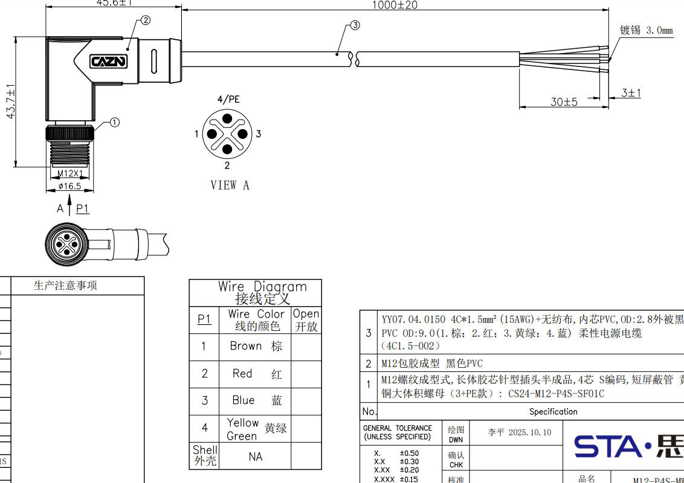
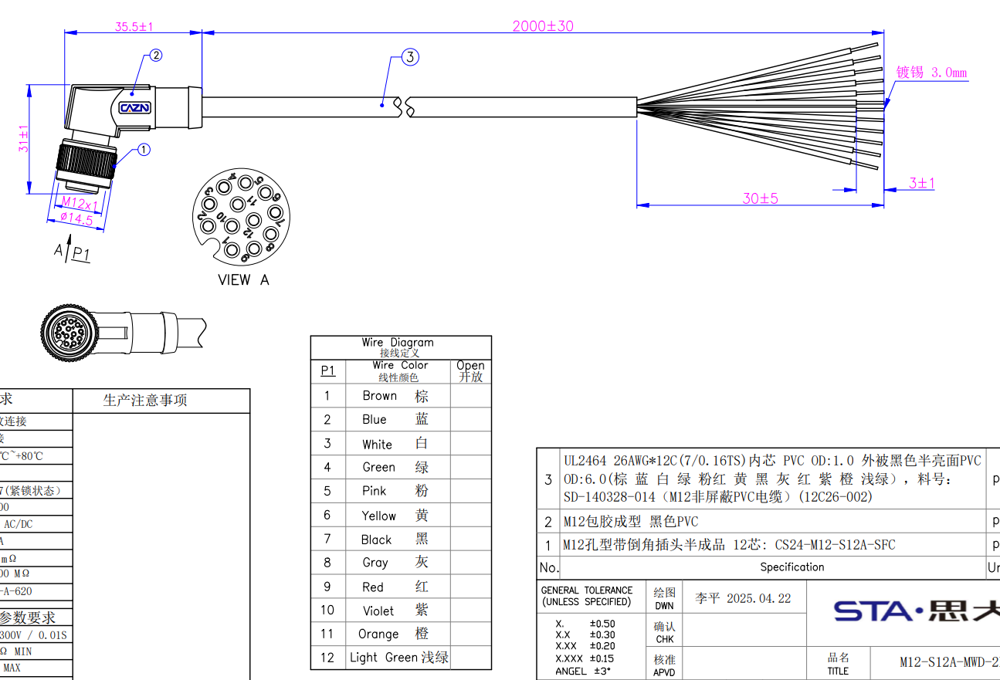
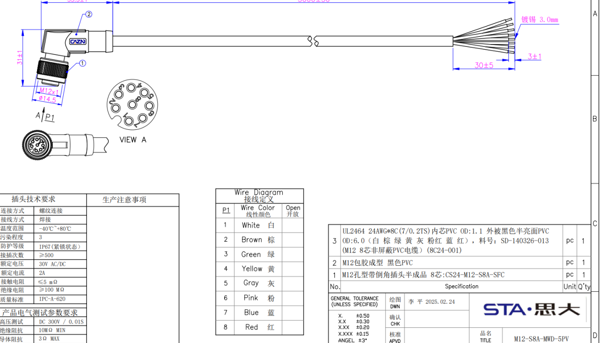
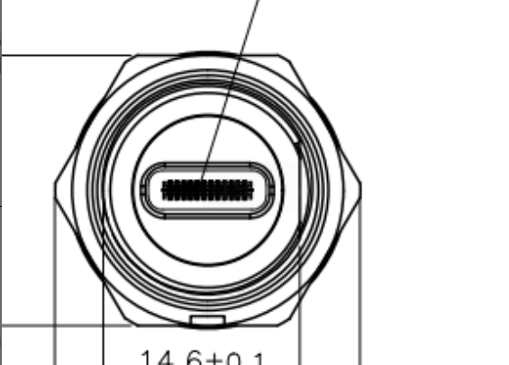
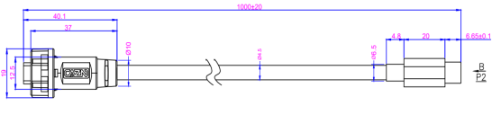

1.5 电气拓展接口

序号 |
接口名称 |
|---|---|
1 |
48V(10A) |
2 |
24V(20A) |
3 |
24V(3A)+网口 |
4 |
12V(5A)+网口 |
5 |
串口（RS232 x1、RS485 x1、SBUS x2、PPS x1） |
6、7 |
USB3.0（5V、1A） |
8 |
RTK天线接口 |
9 |
拓展仓按键 |
所有供电接口的供电总功率在 480W 以内；
有航插头配备防护盖，以确保 IP67，不用的航插头务必盖好防护盖；
扩展仓按键用于控制扩展接口的供电，在进行上装接线时，务必先关闭扩展仓的电源。
航插扩展功能接口说明：
设备名称 |
设备路径 |
|---|---|
RS232 |
/dev/ttyCH9344USB4 |
RS485 |
/dev/ttyCH9344USB5 |
SBUS1 |
/dev/ttyCH9344USB2 |
SBUS2 |
/dev/ttyCH9344USB3 |
1.5.1 电源口48V(10A)
航插母头

航插名称 |
48V 10A |
|---|---|
板端航插型号 |
M12-S4S-GPFM16-135-CS24044 |
线序 1(棕) |
GND |
线序 2(红) |
48V |
线序 3(蓝) |
48V |
线序 4(黄绿) |
GND |
对插线束

1.5.2 电源口24V(20A)
航插母头

航插名称 |
24V 20A |
|---|---|
板端航插型号 |
M12-S4S-GPFM16-135-CS24044 |
线序 1(棕) |
GND |
线序 2(红) |
24V |
线序 3(蓝) |
24V |
线序 4(黄绿) |
GND |
对插线束

1.5.3 网口(24V)
航插母头

航插名称 |
网口+24V |
|---|---|
板端航插型号 |
M12-P12A-GPFM12 |
线序 1(棕) |
GND |
线序 2(蓝) |
24V |
线序 3(白) |
24V |
线序 4(绿) |
网口A+ |
线序 5(粉) |
网口A- |
线序 6(黄) |
网口B+ |
线序 7(黑) |
网口B- |
线序 8(灰) |
网口C+ |
线序 9(红) |
网口C- |
线序 10(紫) |
GND |
线序 11(橙) |
网口D+ |
线序 12(浅绿) |
网口D- |
对插线束

1.5.4 网口(12V)
航插母头

航插名称 |
网口+12V |
|---|---|
板端航插型号 |
M12-P12A-GPFM12 |
线序 1(棕) |
GND |
线序 2(蓝) |
12V |
线序 3(白) |
12V |
线序 4(绿) |
网口A+ |
线序 5(粉) |
网口A- |
线序 6(黄) |
网口B+ |
线序 7(黑) |
网口B- |
线序 8(灰) |
网口C+ |
线序 9(红) |
网口C- |
线序 10(紫) |
GND |
线序 11(橙) |
网口D+ |
线序 12(浅绿) |
网口D- |
对插线束

1.5.5 串口
航插母头

航插名称 |
串口（RS232、RS845、SBUS * 2、PPS） |
|---|---|
板端航插型号 |
M12-P8A-GPFM12 |
线序 1(白) |
PPS |
线序 2(棕) |
SBUS1 |
线序 3(绿) |
SBUS2 |
线序 4(黄) |
RS485A |
线序 5(灰) |
RS485B |
线序 6(粉) |
RS232_TX |
线序 7(蓝) |
RS232_RX |
线序 8(红) |
GND |
对插线束

1.5.6 USB口
航插母头

航插名称 |
USB3.0+5V 两个 |
|---|---|
板端航插型号 |
E10B-FT3-PPF |
线序定义 |
无 |
对插线束
